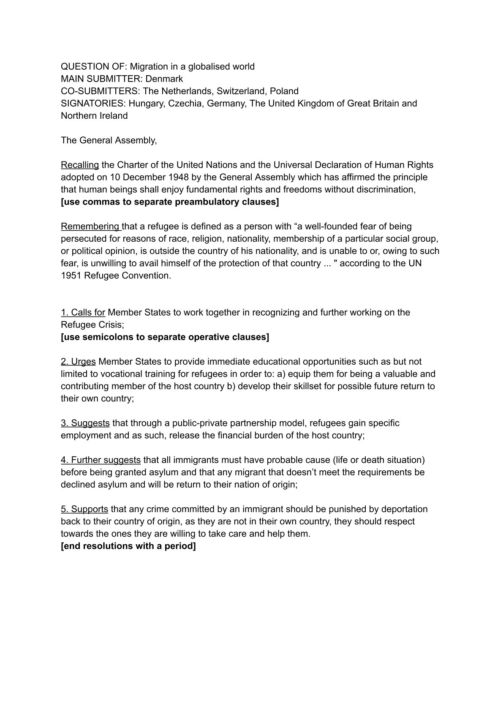

Welcome to UNoSU
We coordinate global RP projects in Stormworks—from crisis management to cultural initiatives. Like the UN, but with more ships and less bureaucracy.
Next Session: November 15, 2025 – Topic: "Regulation of Military Bases in RP Zones"
Other upcoming events:
| Topic |
Date |
Organiser |
| Learning how to debate UN-Style |
November 15th, 2025 |
White Death |
| Learn how to write a draft resolution |
November 22th, 2025 |
White Death |
Section 1: General
- The official language of the UNoSU is English.
- Each Member State will be represented by one Delegate with one vote. A Delegate is not to refer to himself/herself in first person, but in third person as he/she speaks on behalf of a Member State.
- Decisions of the Chair are final. The Chair has the right to deny any motions. Motions to appeal to the Chair's decision are not in order, points of order are however allowed.
- Delegates will show respect to the Chair and to other Delegates. Correct terms of address are to be acknowledged and used. Delegates who fail to comply with formal voting procedure after two formal warnings may have their vote disregarded at the discretion of the Chair.
Section 2: Points & motions
- Accepted points & motions:
(a) Points of personal privilege: to address personal discomfort. It may only interrupt a speaker if related to auditability.
(b) Point of order: to indicate improper parliamentary procedure.
(c) Point of parliamentary enquiry: to ask the Chair about the parliamentary procedure.
(d) Point of information to the Chair: to ask the Chair about the topic discussed
(e) Point of Information: a question directed to the speaker. Multiple questions in one point of information are not in order. Follow ups can be requested.
(f) to introduce an amendment: see "Amendments" below
(g) Split the house: a vote conducted by roll call. Abstaining remains in order.
(h) Motion to move to voting procedure on the amendment/the resolution as a whole.
(i) Motion to move to previous question means moving back to open debate but is often used to move to the next formal step of the agenda.
(j) Motion for a general remark during open debate to speak about the draft resolution as a whole or about a part of the draft resolution
(k) Motion to extend points of information is only in order if a Delegate has opened itself to any and all points of information and if time allows.
Section 3: Speeches
- No Delegate may address a session without previously having obtained the permission from the Chair.
- When speaking on a substantial matter, a Delegate may yield in the following ways after having concluded a speech:
- Yield to questions (open to points of information). Questioniers will be selected by the Chair and each limited to one questions. Follow-up questions (rights of reply) are only in order if the Chair allows it.
- Yield to another Delegate. There will be no points of information to a Delegate, to whom the floor has been yielded. Yields can only be yielded to the Chair.
- Yield to the Chair, if the Delegate does not wish the speech to be subject to points of information.
- A speech yielded to questions (points of information) or to another Delegate can only be yielded to the Chair.
- Speaking time per speech is 3 minutes. At the Chairs discretion, the speaking time can be shortened or extended.
Section 4: Resolutions
- A draft resolution must follow the UN standard template and include relevant topic submitting Member State and Operative Clauses. At lease one Preambulatory Clause must be included.
- Draft resolutions can have only one main submitter but may have severak co-submitters and signatory. A co-submitter has written the draft resolution together with the main submitter. Signatories may not support the draft resolution, but support it being debated.
- For a draft resolution to be introduced, it will need:
(a) To follow the required resolution format as presenting in the example resolution
(b) In total 1 co-submitter and/or signatories
(c) A minimum of two operative Clauses
(d) A maximum of ten operative Clauses.
- A draft resolution must throughout the debate have at least two operative clauses and 1 co-submitter and/or signatory
- The main submitter of a draft resolution will present it to the General Assembly.
Section 5: Amendments
- Amendments to operative clauses may be introduced when the floor is open. The Member State introducing the amendment will automatically be put on the speakers list.
- Amendments can be amended before they have been passed, these are amendments to the second degree and have to be authorised by the Chair.
- Only one caluse can be amended at a time.
- The following types of amendments are in order:
- Adding a clause
- Striking a clause
- Amending a clause (adding/removing subclauses)
- Replacing a clause (striking one and replacing it with another clause).
Section 6: Voting
- Procedural votes are any votes which are not on draft resolutions or amendments. Delegates may not abstain such votes. If no objections to procedural matters are risen, a procedural motion will automatically pass.
- Substantial votes are on amendments or on draft resolutions. Member States must vote "in favour of", "against", or "abstain from voting"
- A majority of votes "in favour of" are required for a motion to pass. If the votes in favour and against are equall divided votes, the discussed motion fails. Splitting the house (role-call vote) is only possible if there are three or less votes dirfference between passing and failing. Member States must vote "in favour of", "against" or "abstain from voting"
Example of a resolution
